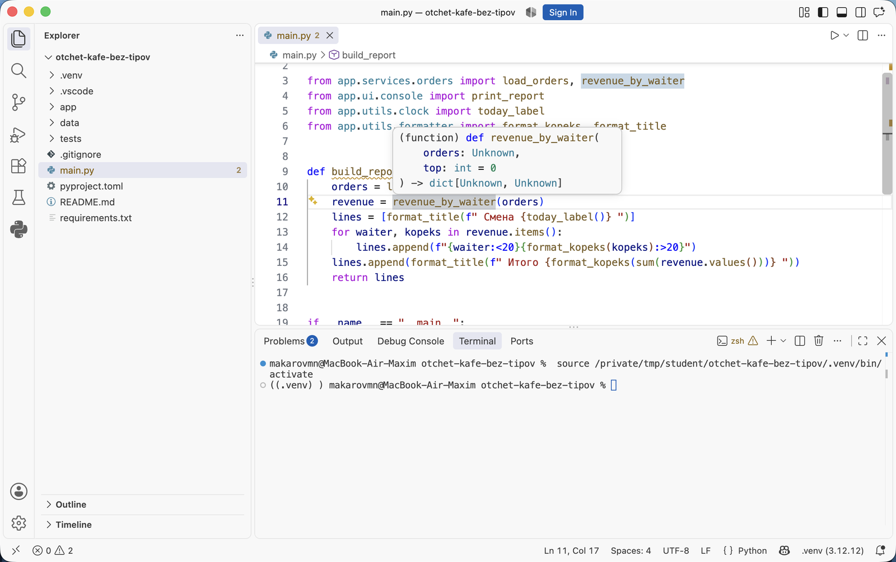

Аннотации типов и документация кода · МДК.01.01 · разработка программных модулей
Глава 4.1
Аннотация типа:
что это и что она делает
В этой главе разобрано, что такое аннотация типа, как она записывается у параметра, у результата и у переменной, что Python делает с ней при запуске программы и в каких трёх местах она приносит пользу: в подсказке редактора, в автодополнении и в проверке кода до запуска.
- Категория
- Понятия
- Уровень
- Начальный
- Опирается на
- Модули и пакеты, тема 02
- Зачем это знать
- Понимать, какие значения принимает функция, не открывая её тело
§1Какой тип у значения
Тип — вид значения, от которого зависит, что с ним можно делать. У числа 5 тип int: его можно складывать и делить. У строки "5" тип str: её можно разрезать и склеить, а сложить с числом нельзя.
Python узнаёт тип значения во время работы программы, в момент, когда значение уже получено. Такой подход называют динамической типизацией: объявлять заранее, какие значения принимает функция, не требуется. В def calculate_average(grades) можно передать список чисел, список строк или одно число, и ошибка, если она будет, возникнет только при выполнении строки, которая с таким значением не справится.
Пока функция лежит в том же файле, что и вызов, это не мешает. Когда функций десятки и они разнесены по пакетам, как в проекте из темы 02, при каждом вызове приходится выяснять одно и то же: что передавать и что вернётся. Аннотации типов записывают ответ прямо в подписи функции.
§2Проект темы
Все примеры в теме взяты из одного проекта — «Отчёт кафе». Он читает файл смены с заказами, считает выручку по каждому официанту и печатает отчёт в консоль. Десять модулей разложены по пакетам: domain — заказ и смена, services — чтение файла и расчёты, utils — имена, суммы и дата, ui — печать.
Проект выдаётся в трёх архивах, по одному на каждый этап темы. Каждый следующий получается из предыдущего: сначала в код добавляют аннотации, потом описания.
Скачайте первый архив и подготовьте его к работе:
- Распакуйте архив и откройте папку
otchet-kafe-bez-tipovв VS Code. - Создайте окружение и установите зависимости:
python3 -m venv .venv, затем.venv/bin/pip install -r requirements.txt. - Запустите проект:
.venv/bin/python main.py. В терминале появится отчёт по смене.
$ .venv/bin/python main.py =========== Смена 21.09.2026 =========== Петрова Анна 2 480,50 ₽ Иванов Пётр 1 685,00 ₽ Сидоров Илья 772,00 ₽ =========== Итого 4 937,50 ₽ ===========
Проект работает, хотя аннотаций в нём нет: для запуска программы они не нужны.
§3Что такое аннотация
Аннотация типа — запись в коде, которая указывает, значения какого типа ожидаются в параметре, в переменной или в результате функции. У параметра она пишется после имени через двоеточие, у результата — после скобок через стрелку ->.
Та же функция из файла app/services/calculator.py в двух вариантах — из первого архива и из второго:
def calculate_average(grades):
Из подписи видно только имя параметра.
def calculate_average(grades: list[int]) -> float:
Параметр — список целых чисел, результат — дробное число.
Части аннотированной подписи разобраны на схеме. Для примера взята функция с параметром по умолчанию: у неё есть все три элемента.
->. У переменной — между именем и знаком равенства. Пример переменной взят из функции revenue_by_waiter.| Где | Запись | Читается как |
|---|---|---|
| Параметр | text: str | параметр text принимает строку |
| Параметр с умолчанием | width: int = 40 | целое число, если не передано — 40 |
| Результат | -> str | функция возвращает строку |
| Функция без результата | -> None | функция ничего не возвращает |
| Переменная | totals: dict[str, int] = {} | словарь «строка — целое число», сейчас пустой |
Запись list[int] означает «список, в котором лежат целые числа», dict[str, int] — «словарь со строковыми ключами и целыми значениями». Как записываются такие составные типы, разобрано в главе 4.2.
§4Что Python делает с аннотацией
При запуске программы Python аннотации сохраняет, но не проверяет. Сохраняет он их в атрибуте __annotations__ функции — это обычный словарь:
>>> from app.services.calculator import calculate_average >>> calculate_average.__annotations__ {'grades': list[int], 'return': <class 'float'>}
Ключи словаря — имена параметров, отдельный ключ 'return' — результат. Сверять с этим словарём переданные значения Python не станет. Как это выглядит на деле, показано ниже: одна и та же функция calculate_average(grades: list[int]) -> float с разными аргументами.
Аннотация при запускепереключите вызов
>>> calculate_average([5, 4, 5, 3, 5]) 4.4
РаботаетПередан список целых чисел, как и записано в аннотации. Функция вернула среднее.
>>> calculate_average([5.5, 4.0]) 4.75
РаботаетАннотация требует целые числа, переданы дробные. Python не остановил вызов: сложение и деление для дробных чисел определены, и функция вернула результат.
>>> calculate_average(['5', '4']) File "app/services/calculator.py", line 4, in calculate_average return round(sum(grades) / len(grades), 2) ^^^^^^^^^^^ TypeError: unsupported operand type(s) for +: 'int' and 'str'
Ошибка внутриВызов тоже начал выполняться, и ошибка возникла только внутри функции, в строке с sum. Сообщение говорит про сложение числа со строкой; про неверный аргумент в нём ничего нет, и из него неясно, в каком месте вызывающего кода передано не то.
from app.services.calculator import calculate_average calculate_average([5.5, 4.0]) calculate_average(["5", "4"])
proba.py:3: error: List item 0 has incompatible type "float"; expected "int" [list-item] proba.py:3: error: List item 1 has incompatible type "float"; expected "int" [list-item] proba.py:4: error: List item 0 has incompatible type "str"; expected "int" [list-item] proba.py:4: error: List item 1 has incompatible type "str"; expected "int" [list-item] Found 4 errors in 1 file (checked 1 source file)
Найдено до запускаПрограмма проверки прочитала аннотацию и сверила с ней оба вызова. Сообщения указывают на строку вызова и называют элемент, у которого не тот тип: ожидался int, передан float и str.
Итог четырёх вызовов: аннотации описывают ожидания, но при запуске не проверяются. Сверку выполняет отдельная программа — ей посвящена глава 4.3.
Ассоциация: разметка на парковке
Линии на асфальте показывают, где место для легковой машины, а где для грузовика. Сами по себе они не мешают грузовику встать на легковое место. Нарушение замечает человек, который проходит и сверяет машины с разметкой.
Аннотация — разметка: она показывает, какое значение ожидается. При запуске Python её не проверяет. Сверку выполняет программа проверки типов, до запуска, по тексту кода.
Где не совпадаетНа парковке нарушение видно, только когда машина уже стоит. Проверка типов находит неверный вызов в тексте программы, ещё до того как она запущена.
§5Подсказка и автодополнение
Первое место, где аннотация видна сразу, — подсказка редактора. Ниже один и тот же вызов revenue_by_waiter в main.py: сначала в первом архиве, где аннотаций нет, затем во втором.

top выведен из значения по умолчанию: top: int = 0. Для orders выводить не из чего — в подсказке Unknown, «неизвестно». Результат тоже почти пустой: dict[Unknown, Unknown].![Подсказка VS Code на том же вызове в проекте с аннотациями: orders: list[Order], результат dict[str, int]](img/vscode-hover-empty.png)
Unknown — записанные типы: orders: list[Order], результат dict[str, int]. Типы параметров и результата видны прямо в месте вызова.Второе место — автодополнение. Когда тип значения известен, редактору доступен перечень его атрибутов и методов, и после точки он предлагает их списком: у значения типа Order — поля waiter и kopeks. У значения типа Unknown предложить нечего.
Зачем это нужно в работе
- Вызов без чтения тела функции. Подсказка при наборе вызова сообщает, какие значения передавать и что вернётся.
- Меньше опечаток в именах атрибутов. Автодополнение предлагает только существующие поля объекта, и имя вроде
order.kopeksвыбирается из списка. - Безопасные правки. Когда тип параметра меняется, проверка показывает все места вызова, которые нужно поправить.
§6Проверка до запуска
Третье место — программы проверки типов. Они читают код и сверяют каждый вызов с аннотациями, не запуская программу. В курсе используются две: Pylance — встроен в расширение Python для VS Code и подчёркивает ошибки прямо в редакторе, и mypy — запускается командой в терминале и в проверках запроса на слияние.
Где сверяются типы
mypy app перечисляет все несовпадения с номерами строк.
перед коммитом
Шаги 2 и 3 выполняются до запуска. Всё, что они не нашли, проявится только в шаге 4 — как в третьей вкладке блока из §4.
§7Аннотация и описание функции
Аннотация сообщает тип значения, но не его смысл. kopeks: int говорит, что это целое число, и не говорит, что сумма хранится в копейках и что отрицательной она быть не может. Такие сведения пишут словами в описании функции — докстринге, которому посвящены главы 4.5–4.10.
| Сведение о функции | Где записывается |
|---|---|
| Тип параметра и результата | Аннотация в подписи |
| Единицы измерения: копейки, знаки после запятой | Докстринг |
Допустимые значения: непустой список, оценки от 2 до 5 | Докстринг |
| Какие исключения возбуждаются | Докстринг |
Порядок значений в паре tuple[int, int] | Докстринг |
Поэтому в теме сначала расставляются аннотации, а затем пишутся описания: типы уже стоят в подписи, и в описании их не повторяют.
§8Частые вопросы
int(...), как в функции load_orders при чтении файла.__annotations__. На время выполнения вызовов они не влияют.orders не видно, список это или словарь и что в нём лежит. Проверка тип по имени не определяет: она берёт его из аннотаций и из присвоенных значений.§9Проверьте себя
Где пишется аннотация у параметра, у результата и у переменной?
У параметра — после имени через двоеточие: text: str. У результата — после закрывающей скобки через стрелку: -> str. У переменной — между именем и знаком равенства: totals: dict[str, int] = {}.
Что произойдёт при вызове calculate_average([5.5, 4.0]), если в аннотации записано list[int]?
Функция выполнится и вернёт 4.75. Python при запуске аннотации не проверяет, а для дробных чисел сложение и деление определены. Несовпадение покажет программа проверки типов, если её запустить.
Где Python хранит аннотации функции?
В атрибуте __annotations__ — словаре, где ключи — имена параметров, а ключ 'return' — тип результата.
Почему сообщение TypeError: unsupported operand type(s) for +: 'int' and 'str' неудобно для поиска ошибки?
Оно возникает внутри функции, в строке с sum, и говорит про сложение числа со строкой. Место вызова, где передан неверный аргумент, из сообщения не видно. Программа проверки типов указывает прямо на строку вызова.
Какие сведения о функции аннотация не передаёт?
Смысл значения и единицы измерения, допустимые значения, возбуждаемые исключения, порядок элементов в кортеже. Их пишут в докстринге.
§10Шпаргалка по главе
text: str
width: int = 40
-> str
-> None — ничего не возвращает
totals: dict[str, int] = {}
хранятся в __annotations__
не проверяются
Pylance — в редакторе
mypy — в терминале
тип — в аннотации
смысл — в докстринге
Итог главы
Python узнаёт тип значения во время работы программы и не требует заранее объявлять, что принимает функция. Аннотация типа записывает это ожидание в код: у параметра после имени через двоеточие, у результата после скобок через стрелку, у переменной между именем и знаком равенства. При запуске Python сохраняет аннотации в словаре __annotations__ и не проверяет их: вызов с дробными числами вместо целых проходит, вызов со строками завершается ошибкой внутри функции. Аннотации используют редактор — в подсказке и автодополнении — и программы проверки типов, которые сверяют вызовы с аннотациями до запуска. Смысл значений и ограничения в аннотацию не помещаются, их пишут в докстринге. В следующей главе разобрано, какие типы можно записать в аннотации: от простых int и str до списков, словарей, вариантов с None и собственных классов.
- Синтаксис аннотаций функций — PEP 3107, переменных — PEP 526.
- Назначение аннотаций и то, что интерпретатор их не проверяет — PEP 484, Type Hints.
- Атрибут
__annotations__— документация Python, Annotations Best Practices. - Выводы в терминале получены запуском архивов проекта темы на Python
3.12и mypy1.15.